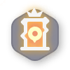
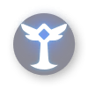

TOOL 03 BETA
伊莫搶蛋地圖辨識
上傳目前探索的地圖截圖，取得可能的地圖編號，再自行選擇要查看哪張完整地圖。
Beta 測試中辨識只提供候選地圖，局部探索或畫面遮擋可能影響結果。截圖只在你的瀏覽器內處理，不會上傳到本站。
SCREENSHOT MATCH
用截圖找地圖
選擇遊戲截圖後，在預覽畫面拖曳框選地圖範圍；避開角色資訊與其他介面。
支援 PNG、JPG、WebP · 最大 20 MB
拖曳框選地圖範圍；若整張截圖只有地圖，可直接開始比對。
等待選擇截圖。
SELECTED MAP
完整地圖
顯示標記標記是資料解析的可能位置，實際出現項目可能依場次而異。
地圖縮放
這張地圖可能包含尚未探索的區域與標記；比對結果仍需自行確認。
MAP MARKERS
辨認地圖線索
下方採用你提供的遊戲資料中對應的圖標，方便對照截圖。

起點金色門出口藍色門
蛋

挑戰寶箱
補充資料
提供新地圖 ↗有新的地圖？
投稿圖片須同時包含蛋圖標、起點金色門圖標與出口藍色門圖標。需要登入 GitHub；圖片與文字會公開顯示，請先移除不想公開的資訊。
比對依據為地圖路徑輪廓。候選編號只供參考，部分探索、縮放與遊戲版本差異可能造成錯誤；完整地圖僅在選擇候選後開啟。
BACK TO TOOLS